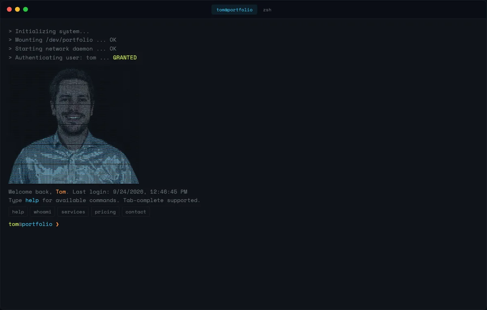

Experiment · Terminal
tjansn.com als Terminal

Warum ein Terminal
2025 und 2026 sind das Zeitalter des Terminals. Die interessanten Werkzeuge laufen wieder in der Shell, Coding-Agenten vorneweg, und das Terminalfenster ist für viele von uns wieder der Ort, an dem der Arbeitstag stattfindet. Eine Website, die sich wie ein Terminal verhält, passt in diese Zeit.
Und sie steht für etwas, das ich Kunden oft erkläre: Agenten machen Ausprobieren billig. Dinge, die früher ein Wochenende gekostet hätten und deshalb nie passiert sind, kosten jetzt einen Abend. Also probiert man sie. Manches bleibt. Das meiste nicht, und das ist in Ordnung.